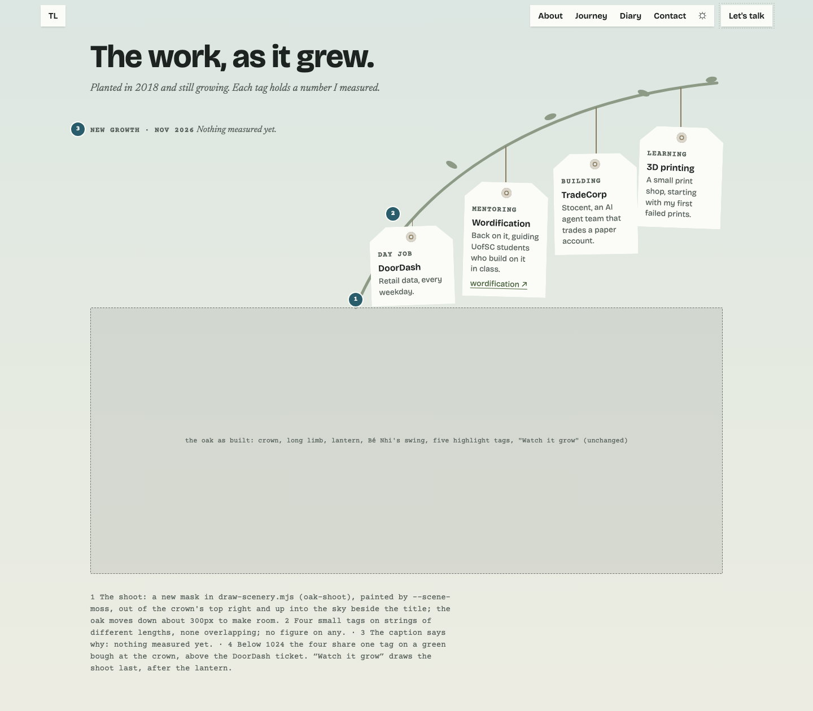
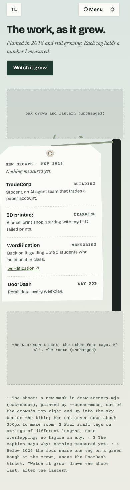
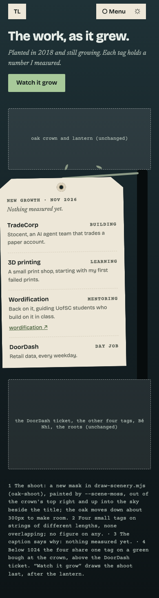
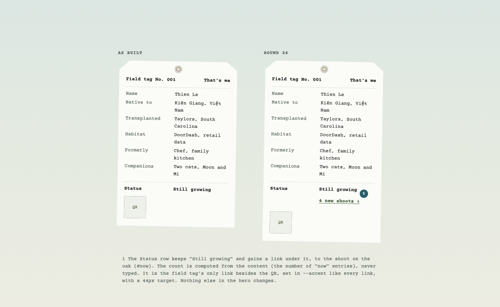
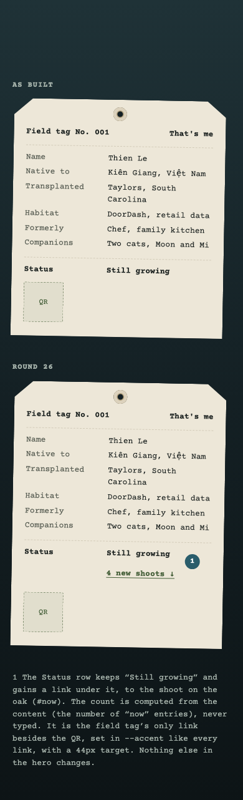

Round 26 · v1 · 2026-11-07 · waiting on Thien
New growth: what I'm doing now
Four current things hang on a new shoot of the oak (#now). The hero gets one link to them, from the field tag's Status row. Nothing else on the page moves.
The Journey




About


The copy (draft, in the content file once approved)
| Tag | Status | Line | Link |
|---|---|---|---|
| TradeCorp | building | Stocent, an AI agent team that trades a paper account. | none until its public site is up |
| 3D printing | learning | A small print shop, starting with my first failed prints. | none |
| Wordification | mentoring | Back on it, guiding UofSC students who build on it in class. | wordification.scholastechnology.com |
| DoorDash | day job | Retail data, every weekday. | none (the ticket on the oak already covers it) |
Decisions that are Thien's
- The desktop oak moves down about 300px so the shoot has sky to grow into beside the title. The other way: the shoot grows off the long limb's far end, which keeps the oak where it is but crowds the USC tags.
- Each line above. In particular: is "a small print shop" true yet, and is it fine to say TradeCorp trades a paper account?
- Does the chat know about these? Recommended: yes. They're in the content file, so "what are you working on?" gets an answer.
- The shoot in "Watch it grow": drawn last, after the lantern, as a closing beat ("and now").